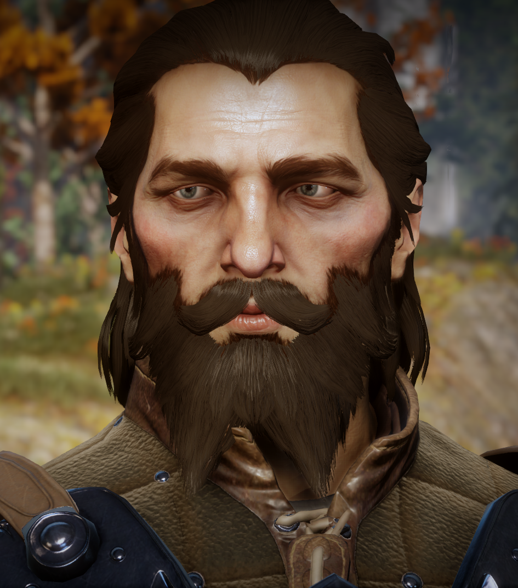

| Race | Human |
| Gender | Male |
| Class | Warrior |
| Title | Warden-Constable Recipient of the Silverite Wings of Valor Champion of the Grand Tourney of the Free Marches |
| Affiliation | Grey Wardens Inquisition (conditional) |
| Specialization | Champion |
| Quests | The Lone Warden Utilize the Grey Warden Treaties Memories of the Grey Conscript for the Inquisition Explanations Revelations Thom Rainier's Fate Sit in Judgment of Rainier Rainier's Release: An Alternative The Consequences of Blackwall's Lie |

Blackwall is a Free Marcher Grey Warden and a potential companion as well as a romance option for a female Inquisitor in Dragon Age: Inquisition. Nothing is known of Blackwall prior to his recruitment into the Grey Wardens from the city of Cumberland in 9:17 Dragon, but he is said to be one of the few who chose, of his own accord, to undergo the Joining. He is proud of the lives of isolation and valor those of his order lead. In that isolation, he counsels that you have become something more than yourself. He prefers the life of the Warden to any other. Blackwall was a close friend of then Warden-Constable Alisse Fontaine and succeeded her in the position when she became Commander of the Grey in Orlais in 9:28. He was put in charge of Warden operations in northern Orlais and stationed in Val Chevin. During the Fifth Blight in 9:30 Dragon, Blackwall was strongly opposed to Teyrn Loghain's decision to close the Fereldan borders, and exile of the Grey Wardens while the Fifth Blight raged. Shortly after the Blight, on a mission to secure all known Deep Roads entrances in Orlais, he was awarded the Silverite Wings of Valor for rescuing seven fellow Wardens when a tunnel collapsed. He managed to free himself of the rubble and navigated a crumbling darkspawn-infested cave system alone to reach and free his fellows. Blackwall approves of helping and protecting others and Inquisitors who spur people to do the same. He is not fond of conscripting, exiling, or disbanding famed organizations dedicated to service. He also despises aiding self-serving power-hungry tyrants or those who punish for cruelty. He is fond of those who speak highly of the Grey Wardens and those who ally with them.